fastmath.interpolation
1d, 2d interpolation functions.
See more:
- Apache Commons Math
- [Smile Interpolation](http://haifengl.github.io/smile/api/java/smile/interpolation/package-summary.html
- SSJ B-Spline
Note: Smile interpolators also extrapolate values outside range.
Input data
You provide data as sequence or double array.
1d interpolation
You provide two sequences:
xs- x axis coorditanes, strictly monotonic (increasing)ys- function values
See kriging-spline-interpolator
2d interpolation
This is grid based interpolation.
xs- x axis coordinates, strictly monotonic (increasing)ys- y axis coordinates, strictly monotonic (increasing)vs- sequence of sequences of values (2d array) for all possible pairs. Array is column-wise:[ [first column] [second column] ...].
Examples
Examples below use following functions:
1d
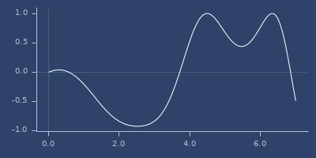
2d
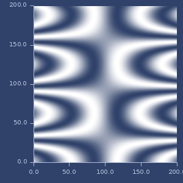
Categories
- Apache Commons Math interpolators: akima-spline bicubic divided-difference interpolators-1d-list interpolators-2d-list linear loess microsphere-2d-projection microsphere-projection neville piecewise-bicubic spline step step-after step-before
- 1d interpolation: akima-spline b-spline b-spline-interp cubic-spline divided-difference interpolators-1d-list kriging-spline linear linear-smile loess microsphere-projection monotone neville polynomial rbf shepard spline step step-after step-before
- 2d interpolation (grid based): bicubic bicubic-smile bilinear cubic-2d interpolators-2d-list microsphere-2d-projection piecewise-bicubic
- Smile interpolators: bicubic-smile bilinear cubic-2d cubic-spline interpolators-1d-list interpolators-2d-list kriging-spline linear-smile rbf shepard
- SSJ interpolators: b-spline b-spline-interp polynomial
Code snippets
1d interpolation
(defn interpolate
[f params & opts]
(let [fun (fn [x] (m/sin (* x (* 0.5 (m/cos (inc x))))))
xs [0.69 1.73 2.0 2.28 3.46 4.18 4.84 5.18 5.53 5.87 6.22]
ys (map fun xs)
interpolator ((apply partial f params) xs ys)]
(interpolator 5.0)))2d interpolation
(defn interpolate2d
[f params & opts]
(let [fun (fn [x y]
(m/sin (* (/ (- x 100.0) 10.0) (m/cos (/ y 20.0)))))
xs [20 50 58 66 100 121 140 150 160 170 180]
ys [20 30 58 66 90 121 140 152 170 172 180]
vs (partition (count ys) (for [x xs y ys] (fun x y)))
interpolator ((apply partial f params) xs ys vs)]
(interpolator 105 155)))akima-spline
(akima-spline xs ys)Create cubic spline interpolator using Akima algorithm. Minimum number of points: 5
xs[n] < xs[n+1] for all n.
Source: Apache Commons Math.
Examples
Usage
(interpolate akima-spline ...)
;;=> 0.6825735245080953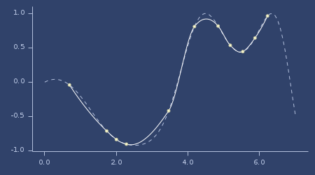Akima spline plot
b-spline
(b-spline xs ys)(b-spline degree-or-knots xs ys)B-spline for given points, default degree equals samples count - 1.
Examples
Usage
(interpolate b-spline ...)
;;=> 0.5600852765013091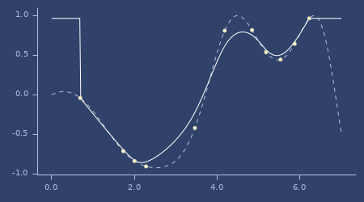B-Spline plot
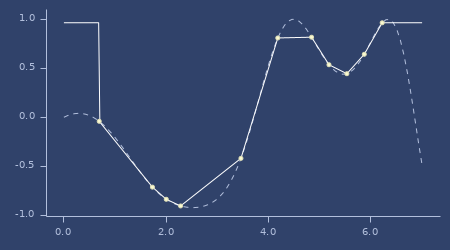B-Spline plot (degree=1)
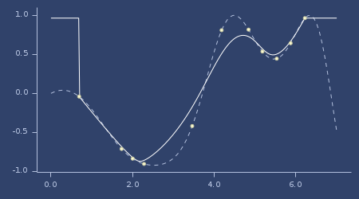B-Spline plot (with knots)
b-spline-interp
(b-spline-interp xs ys)(b-spline-interp degree xs ys)(b-spline-interp degree h xs ys)Examples
Usage
(interpolate b-spline-interp ...)
;;=> 0.6903406231405653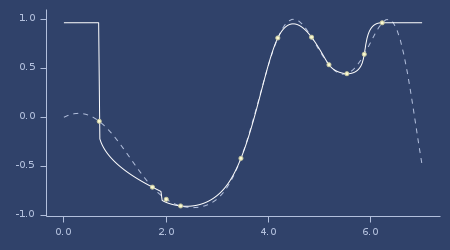B-Spline interpolation plot
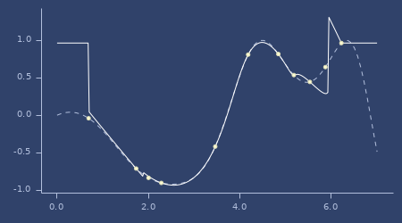B-Spline interpolation plot (degree=5)
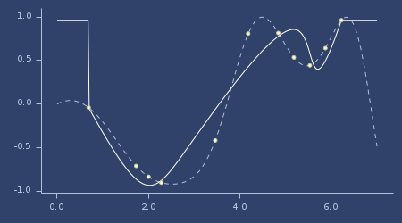B-Spline interpolation plot (degree=3, h=6)
bicubic
(bicubic xs ys vs)Bicubic 2d.
Grid based.
Source: Apache Commons Math.
Examples
Usage
(interpolate2d bicubic ...)
;;=> 0.07081337259133846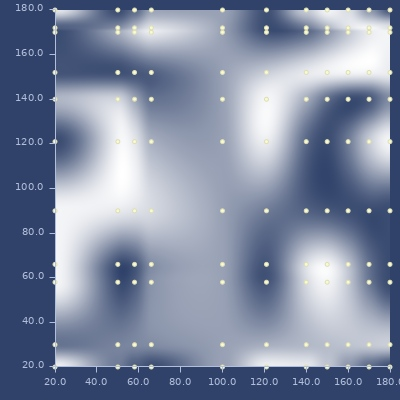Bicubic plot
bicubic-smile
(bicubic-smile xs ys vs)Bicubic 2d.
Grid based.
Source: Smile.
Examples
Usage
(interpolate2d bicubic-smile ...)
;;=> 0.07081337259133846Bicubic (Smile) plot
bilinear
(bilinear xs ys vs)Bilinear 2d.
Grid based.
Source: Smile.
Examples
Usage
(interpolate2d bilinear ...)
;;=> 0.062068616254939334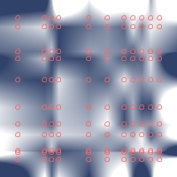Bilinear plot
cubic-2d
(cubic-2d xs ys vs)Cubic spline 2d.
Grid based.
Source: Smile.
Examples
Usage
(interpolate2d cubic-2d ...)
;;=> 0.053984474655155074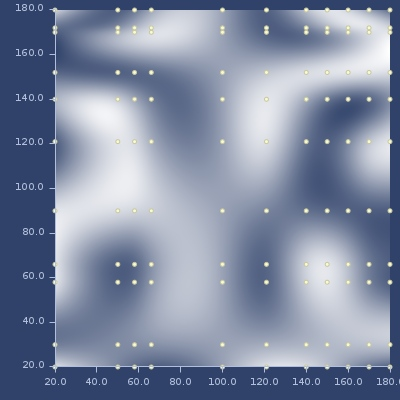Cubic-2d plot
cubic-spline
(cubic-spline xs ys)Cubic spline interpolation.
Source: Smile.
Examples
Usage
(interpolate cubic-spline ...)
;;=> 0.6809644344471792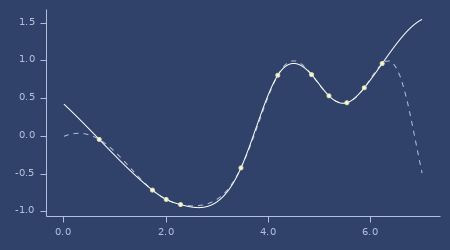Cubic spline plot
divided-difference
(divided-difference xs ys)Create Divided Difference Algorithm for interpolation.
Source: Apache Commons Math.
Examples
Usage
(interpolate divided-difference ...)
;;=> 0.6789478287835669Divided difference plot

interpolators-1d-list
Map of 1d interpolation functions
Examples
List of names
(keys interpolators-1d-list)
;;=> (:linear-smile :divided-difference :rbf
;;=> :neville :step-after
;;=> :kriging-spline :cubic-spline
;;=> :spline :b-spline
;;=> :loess :step-before
;;=> :polynomial :shepard
;;=> :linear :microsphere
;;=> :monotone :step
;;=> :b-spline-interp :akima)interpolators-2d-list
Map of 2d interpolation functions
Examples
List of names
(keys interpolators-2d-list)
;;=> (:bicubic :piecewise-bicubic
;;=> :microsphere-2d :bilinear
;;=> :bicubic-smile :cubic-2d)kriging-spline
(kriging-spline xs ys)Kriging interpolation.
Source: Smile.
Examples
Usage
(interpolate kriging-spline ...)
;;=> 0.6863915017789581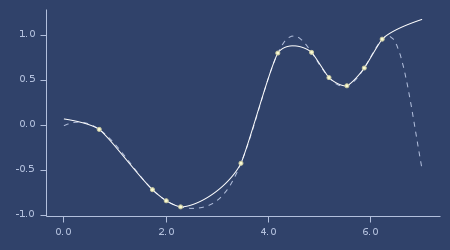Kriging spline plot
linear
(linear xs ys)Create Divided Difference Algorithm for inqterpolation.
Source: Apache Commons Math.
Examples
Usage
(interpolate linear ...)
;;=> 0.6843915831251183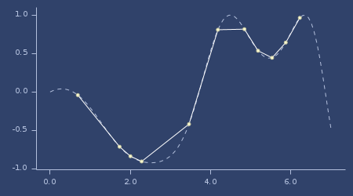Linear (Apache) plot
linear-smile
(linear-smile xs ys)Linear interpolation from Smile library.
Source: Smile.
Examples
Usage
(interpolate linear-smile ...)
;;=> 0.6843915831251183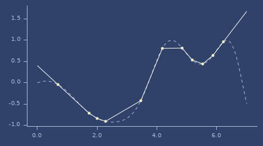Linear (Smile) plot
loess
(loess xs ys)(loess bandwidth robustness-iters xs ys)(loess bandwidth robustness-iters accuracy xs ys)Local Regression Algorithm
- bandwidth: 0.2-1.0 (optimal: 0.25-0.5, default: 0.4)
- robustness-iters: 0-4 (optimal: 0, default: 2)
- accuracy: double (default: 1e-12)
Source: Apache Commons Math.
Examples
Usage
(interpolate loess ...)
;;=> 0.6878279262016764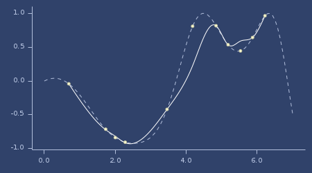Loess plot
Usage (0.7, 2.0)
(interpolate loess 0.7 2 ...)
;;=> 0.5834139882299265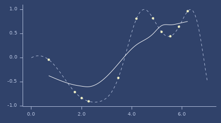Loess (0.7, 2.0) plot
Usage (0.2, 1.0)
(interpolate loess 0.2 1 ...)
;;=> 0.6809644344471794Loess (0.2, 1.0) plot

microsphere-2d-projection
(microsphere-2d-projection elements max-dark-friction dark-threshold background exponent shared-sphere? no-interpolation-tolerance xs ys vs)Microsphere projection interpolator - 2d version
Grid based.
Source: Apache Commons Math.
Examples
Usage
(interpolate2d microsphere-2d-projection
10 0.5
1.0E-4 0.5
1.5 false
0.1 ...)
;;=> 0.004861845509631569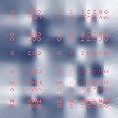Microsphere 2d plot
microsphere-projection
(microsphere-projection elements max-dark-friction dark-threshold background exponent shared-sphere? no-interpolation-tolerance xs ys)Microsphere projection interpolator - 1d version
Source: Apache Commons Math.
Examples
Usage
(interpolate microsphere-projection 6 0.1 0.1 0.1 1.5 false 0.01 ...)
;;=> 0.5898304448413348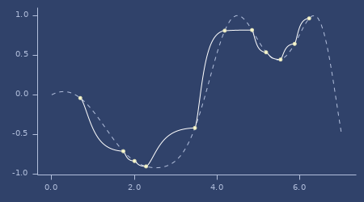Microsphere plot
monotone
(monotone xs ys)Monotone interpolation
Examples
Usage
(interpolate monotone ...)
;;=> 0.7094972531399422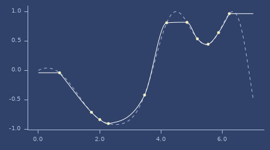Monotone plot
neville
(neville xs ys)Neville algorithm
Source: Apache Commons Math.
Examples
Usage
(interpolate neville ...)
;;=> 0.6789478287835672Neville plot

piecewise-bicubic
(piecewise-bicubic xs ys vs)Piecewise bicubic 2d.
Grid based.
Source: Apache Commons Math.
Examples
Usage
(interpolate2d piecewise-bicubic ...)
;;=> 0.06876424996210916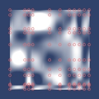Piecewise bicubic plot
polynomial
(polynomial xs ys)Polynomial interpolation.
Examples
Usage
(interpolate polynomial ...)
;;=> 0.6789478287861641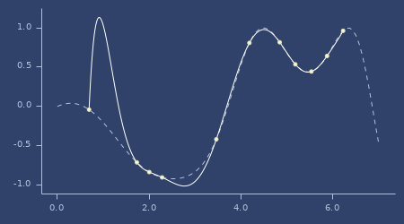Polynomial plot
rbf
(rbf xs ys)(rbf rbf-fn normalize? xs ys)(rbf rbf-fn xs ys)RBF (Radial Basis Function) interpolation.
Default kernel: :gaussian
Source: Smile
Examples
Usage
(interpolate rbf ...)
;;=> 0.6773457006293544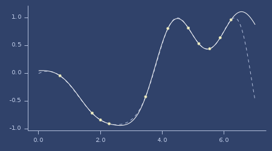Rbf plot
Usage (mattern-c0 kernel)
(interpolate rbf (k/rbf :mattern-c0) ...)
;;=> 0.6747315645069648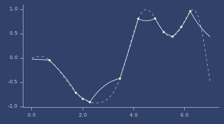Rbf (mattern-c0 kernel) plot
Usage (gaussian kernel, normalized)
(interpolate rbf (k/rbf :gaussian) true ...)
;;=> 0.6883452896663599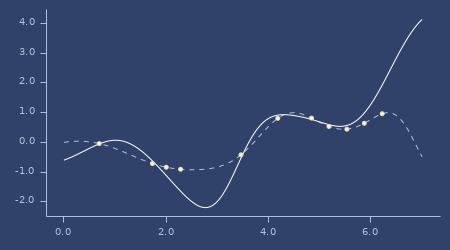Rbf (gaussian kernel, normalized) plot
Usage (truncated-power kernel)
(interpolate rbf (k/rbf :truncated-power 3 0.3) ...)
;;=> 0.11727096867681523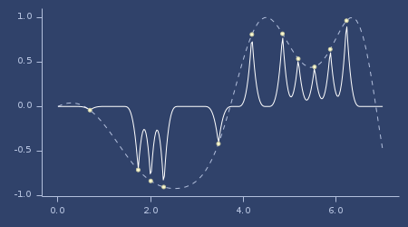Rbf (truncated-power kernel) plot
Usage (wendland-53 kernel)
(interpolate rbf (k/rbf :wendland-53) ...)
;;=> 0.74837576670325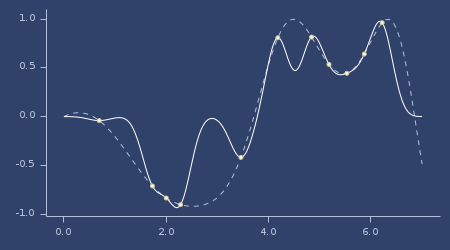Rbf (wendland-53 kernel) plot
shepard
(shepard xs ys)(shepard p xs ys)Shepard interpolation.
Source: Smile.
Examples
Usage
(interpolate shepard ...)
;;=> 0.6717576636886534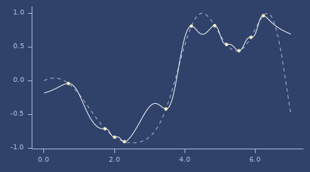Shepard plot
Usage (0.9)
(interpolate shepard 0.9 ...)
;;=> 0.5225345022349268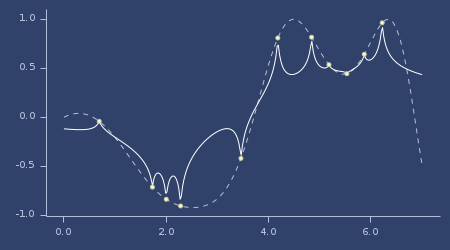Shepard (0.9) plot
spline
(spline xs ys)Cubic spline interpolation
Source: Apache Commons Math.
Examples
Usage
(interpolate spline ...)
;;=> 0.6809644344471794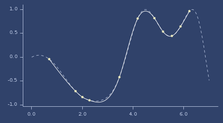Spline plot
step
(step xs ys)Step function.
Examples
Usage
(interpolate step ...)
;;=> 0.8165378262982225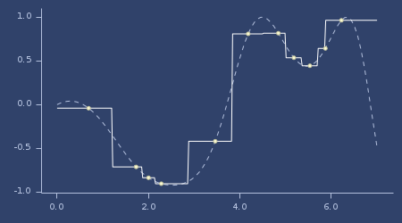Step plot
step-after
(step-after xs ys)Step function.
Examples
Usage
(interpolate step-after ...)
;;=> 0.8165378262982225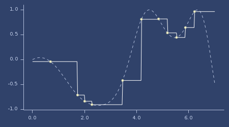Step (after) plot
step-before
(step-before xs ys)Step function.
Examples
Usage
(interpolate step-before ...)
;;=> 0.5357270595553765Step (before) plot